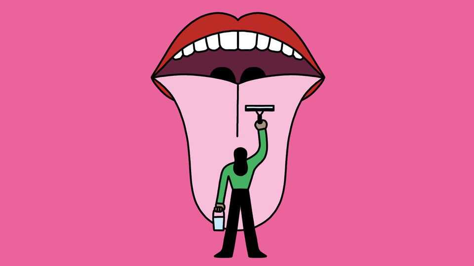

Should you be using a tongue-scraper?
Another tool will do the job just as well

Oct 8th 2026
People have used tongue-scrapers since at least the Roman era. Napoleon Bonaparte’s was made of silver. George Washington took his everywhere. Today “influencers” like Hailey Bieber and Gwyneth Paltrow scrape their tongues as part of their “wellness” routines. But does tongue-scraping add anything to dental hygiene that brushing and flossing can’t do alone?
The mouth, like the gut, is home to lots of microbes. A healthy oral microbiome includes around 700 species of bacteria, along with fungi, protozoa and viruses. But poor oral hygiene, smoking or bad diet can upset the balance. That results in bacterial colonies, called biofilms, in which species thrive that cause tooth cavities, gum disease and chronic bad breath (halitosis).
Biofilms are the basis of dental plaque, which forms because teeth, unlike the mouth’s other tissues, are not constantly shedding their cells, and thus any bacteria clinging to them. But tongues, which host about two-thirds of the oral microbiome, are also susceptible to biofilms—which can turn them white or yellow. The gaps between the tiny protuberances covering a tongue’s upper surface teem with bacteria and are especially hospitable to anaerobic species, the respiration of which does not require oxygen but does often generate foul-smelling sulphurous compounds.
Given all this, it might be expected that evidence for the virtues of regular tongue-cleaning would be as abundant as that for cleaning teeth. Alas there is not much.
A trial published in 2018, involving 36 people suffering from gum disease, for example, found that adding tongue scraping to a normal dental-cleaning routine did indeed reduce halitosis. Another, on 45 children, which was published in 2015, showed it significantly lowered levels of Streptococcus mutans—a principal cause of tooth decay.
This particular trial, however, cast doubt on the idea that you need to use a special instrument to keep your tongue clean, for it also found that brushing tongues with a normal toothbrush or rinsing the mouth with salt water both worked just as well as using an actual scraper. Similarly, a third trial—of 56 people with bad breath, published in 2021—found that tongue-scraping and tongue-brushing removed tongue biofilms and reduced odiferous sulphur compounds to the same degree. A fourth, of another 80 bad-breathed individuals, published earlier this year, got similar results with tongue-brushing (rather than scraping) backed up by a dose of Streptococcus salivarius, a so-called oral probiotic that crowds out hostile bacteria such as S. mutans.
Good lingual hygiene may also improve someone’s sense of taste. A review of four trials published in 2025 found that removing tongue coatings increased intensity of salt perception, with one study doing so for 60% of participants.
Together, these results suggest tongue-scrapers might indeed do the biz, but that other approaches to lingual hygiene (including using the toothbrush with which you anyway clean your teeth) can be equally effective. Nevertheless, Zoe Brookes, a professor of dentistry at the University of Plymouth, urges caution. The studies, she says, are too small to draw strong conclusions. And removing too many bacteria from a healthy tongue might equally disrupt the oral microbiome. To maintain a healthy mouth, she observes, nothing beats toothbrushing (twice daily), flossing and cutting out the sweets.■
After a free, evidence-based guide to health and wellness? Sign up to our weekly Well Informed newsletter.